Encargos · La Mesa Barcelona
Vajilla artesanal para restaurantes
Platos, platitos y bowls de gres hechos a mano en nuestro taller de la Barceloneta. En compra o en alquiler, con las medidas y los colores de tu cocina.
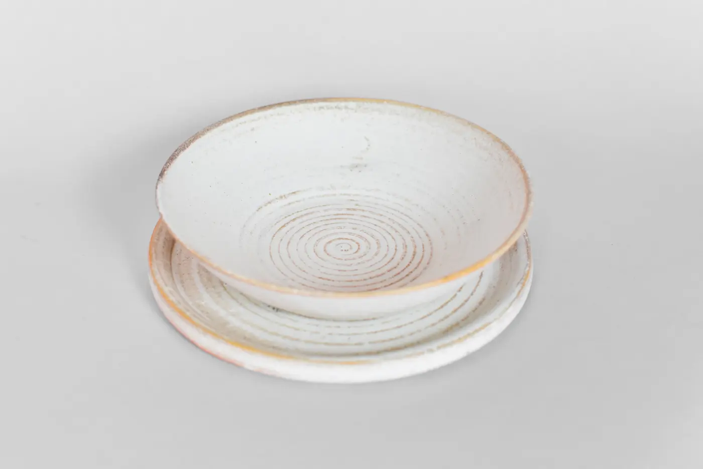
Dos ceramistas, un taller en la Barceloneta
Somos Lau y Vick. Hacemos cada pieza a mano, una a una, en gres de alta temperatura, en nuestro taller de Carrer de l'Atlàntida. Trabajamos con cocinas que cuidan el emplatado: restaurantes de autor y bistrós que quieren que la vajilla hable de su casa.
- Hecho a mano, pieza a pieza
- Gres de alta temperatura
- Producción local en Barcelona
Formas por uso en sala
Tres familias pensadas para el servicio. Cada forma se hace en cualquiera de nuestras colecciones de color o en el color que definamos contigo.
- Verde Piedra
- Romantika
- Alma Azul
- Galaxia
- Lago
- Sol
- Mar
Platitos
Para mise en bouche, aperitivos y entrantes. Platito y platito elevado.
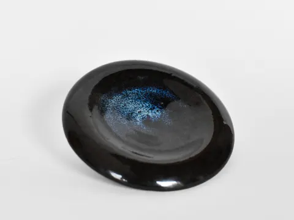
PlatitoGalaxia 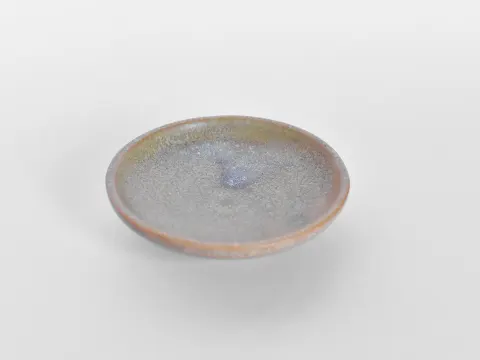
PlatitoLago 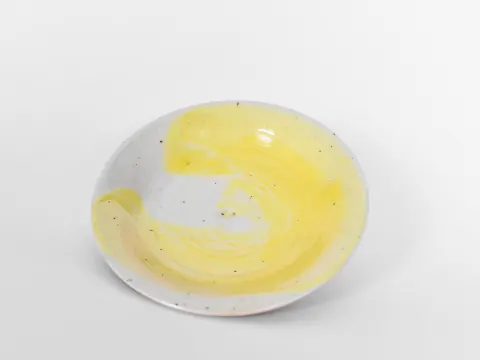
PlatitoSol 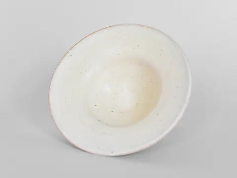
Platito elevadoRomantika
Alturas
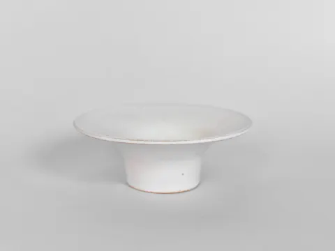
Platito elevadoDe perfil 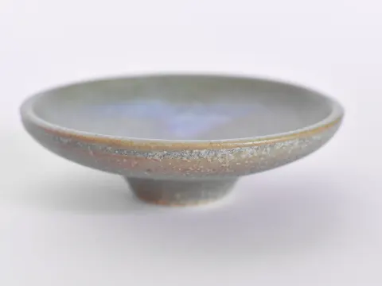
Platito con pieLago, de perfil
El pie alto del platito elevado levanta el bocado: útil en el primer pase.
Platos
Para principales, entrantes para compartir y platos de presentación. Plano, hondo, cuadrado y geométrico.
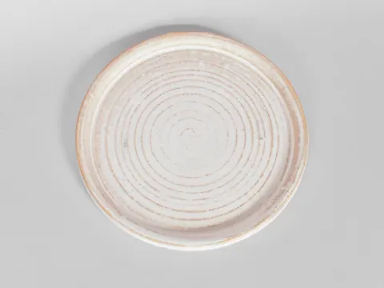
Plato planoRomantika 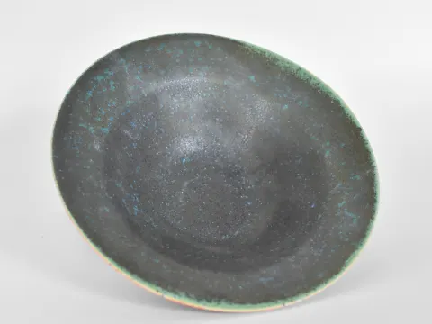
Plato hondoVerde Piedra 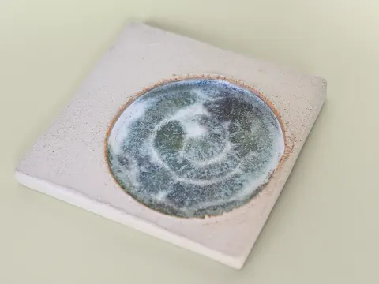
Plato cuadradoMar 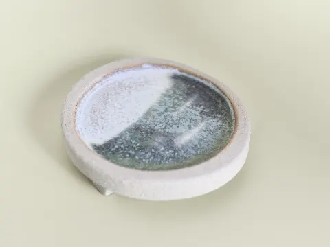
Plato geométricoCon patas
Alturas y profundidad
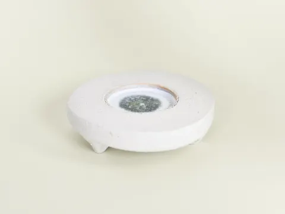
GeométricoPatas bajas 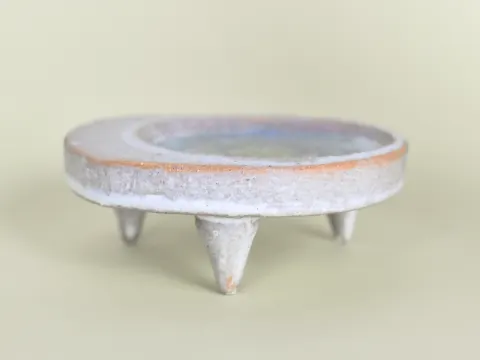
GeométricoPatas altas 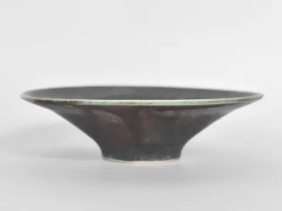
Plato hondoVerde Piedra, de perfil
Los geométricos llevan patas aplicadas a mano, en tres alturas: la pieza se separa de la mesa.
Bowls y cuencos
Para caldos, guisos, postres y salsas. Cuenco, bowl y cuenco media.
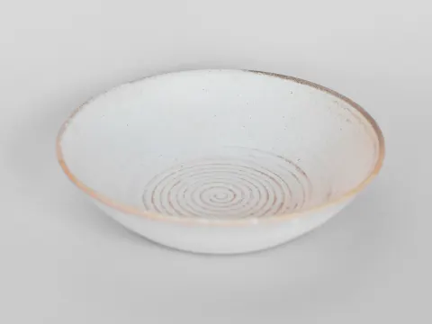
CuencoRomantika 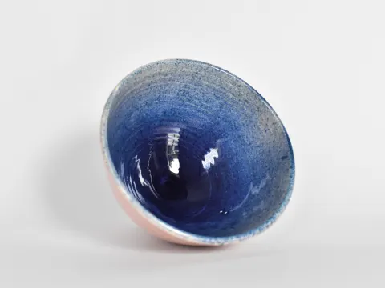
BowlAlma Azul 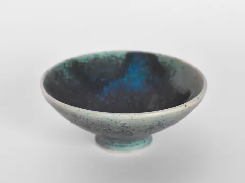
CuencoVerde Piedra 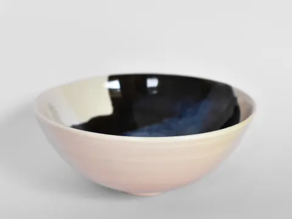
Cuenco mediaGalaxia
Alturas
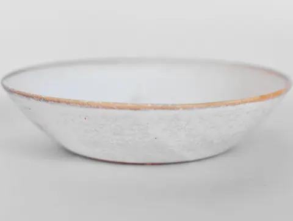
CuencoRomantika, de perfil 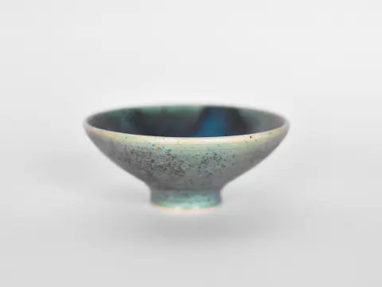
Cuenco con pieVerde Piedra, de perfil
A medida de tu cocina
Cada pieza puede hacerse en las medidas que necesites y cada forma en los colores que elijas. Partimos de tu carta y de tu sala: nos cuentas el plato, el pase y el espacio, y te proponemos formas, tamaños y esmaltes.
Cada proyecto se presupuesta aparte. Si quieres ver y tocar las piezas, ven al taller con cita previa.
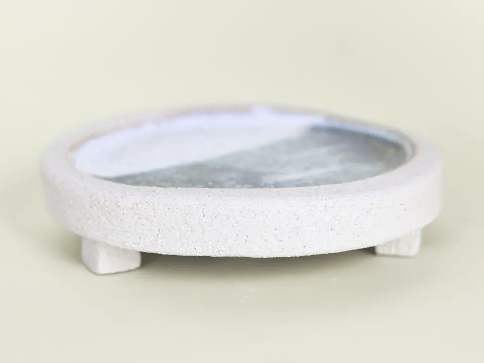
Compra o alquiler
Te pasamos precio cerrado en el presupuesto, según formas, cantidades y colores.
Compra
Las piezas son tuyas, en la cantidad que necesites.
- Sin pedido mínimo: desde una pieza.
- Descuentos por volumen en piezas del mismo tipo.
- Enviamos a toda Europa.
Alquiler
Pensado para cartas de temporada: cambias la vajilla cuando cambias el menú.
- Periodos de 4, 6 o 12 meses. Cuanto más largo, menor precio por pieza.
- Fianza de una mensualidad, que se devuelve al final.
- Roturas incluidas hasta el 5 % de las piezas.
- Solo área de Barcelona, con entrega y recogida incluidas.
Resistencia y cuidado
- Lavavajillas
- Sí
- Microondas
- Sí
- Horno
- No
- Uso alimentario
- Apto
Son piezas pensadas para fine dining y bistrós. Aguantan el servicio diario, pero no los golpes fuertes: no son vajilla de batalla.
Encargos para casa y regalos
¿No tienes un restaurante? También hacemos piezas por encargo para particulares: una vajilla para casa, un juego de bowls, un regalo de boda o una pieza con el color que tienes en mente.
Escríbenos con la idea y te decimos plazo y precio. Si prefieres una pieza ya hecha, mira nuestra tienda.
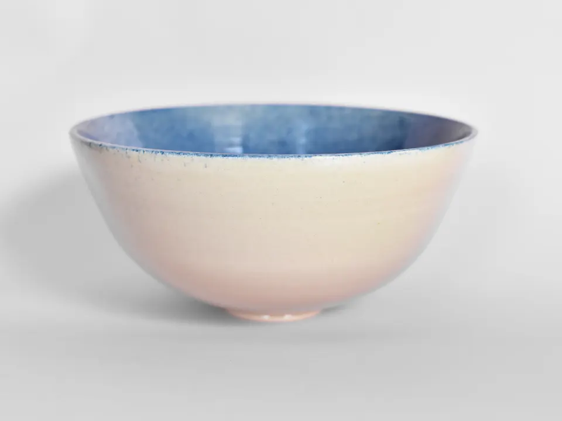
Cómo trabajamos
Contacto
Nos escribes con el tipo de cocina, las piezas y las cantidades aproximadas.
Visita o propuesta
Vienes al taller a ver formas y esmaltes, o te enviamos fotos y una propuesta.
Presupuesto
Cerrado, con formas, medidas, colores y plazo de entrega.
Producción
Hacemos las piezas a mano. El plazo es de unas semanas, según cantidad y colores.
Preguntas frecuentes
¿Hay un pedido mínimo?
No. Hacemos desde una sola pieza para casa hasta series completas para un restaurante.
¿Cuánto tardáis?
Unas semanas, según la cantidad, las formas y los colores. En el presupuesto te damos una fecha concreta.
¿Van al lavavajillas y al microondas?
Sí, a los dos. Al horno, no. Son aptas para uso alimentario.
¿Podéis hacer una medida o un color fuera del catálogo?
Sí. Las medidas se hacen bajo pedido y cada forma puede ir en el color que definamos contigo. Lo presupuestamos aparte.
¿Todas las piezas son idénticas?
Cada pieza se hace a mano, así que hay pequeñas diferencias de tono y forma entre unas y otras. Dentro de una serie mantenemos medidas y esmalte.
¿Cómo funciona el alquiler?
Alquilas las piezas por 4, 6 o 12 meses, con una fianza de una mensualidad que se devuelve al final. Es solo para el área de Barcelona y la entrega y la recogida están incluidas.
¿Y si se rompe una pieza alquilada?
Las roturas están incluidas hasta el 5 % de las piezas. Por encima, cada pieza rota se cobra al precio de compra.
¿Enviáis fuera de Barcelona?
Sí, enviamos a toda Europa. El alquiler, en cambio, es solo para el área de Barcelona.
¿Puedo visitar el taller?
Sí, con cita previa. Estamos en Carrer de l'Atlàntida, 47, en la Barceloneta.
Contáctanos
Cuéntanos qué piezas necesitas, cuántas y para cuándo. Respondemos en menos de 24 horas.